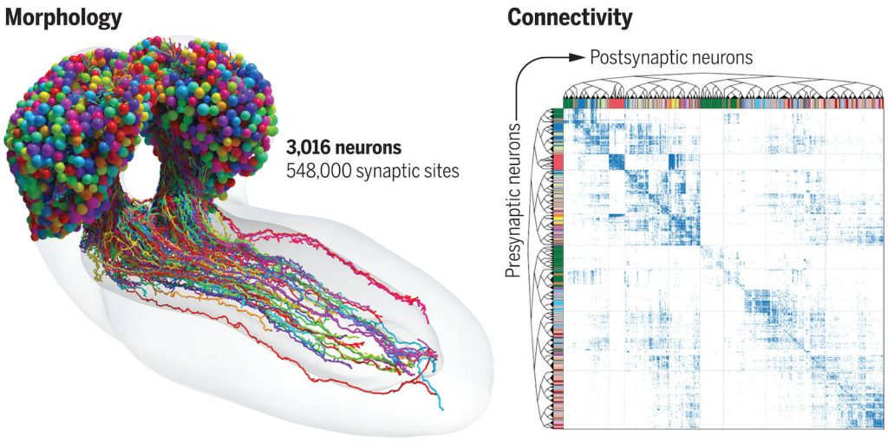
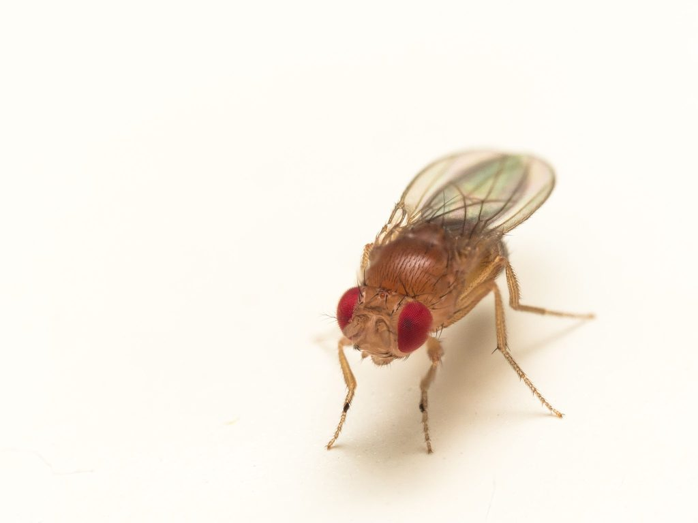

ဒီ ဦးဏှောက်နှင့် အာရုံကြော ကွန်ယက် မြေပုံကို Connectome လို့ အမည် ပေးထားပါတယ်။ ဒီ မြေပုံ ရဖို့ သိပ္ပံ ပညာရှင် တွေဟာ အချိန် ၁၂ နှစ်တောင် အချိန်ယူပြီး ကြိုးပမ်းခဲ့ ရတာ ဖြစ်ပါတယ်။
ဒီ ဦးဏှောင်နှင့် အာရုံကြော မြေပုံမှာ ယင်ကောင် တစ်မျိုး ဖြစ်တဲ့ Drosophila melanogaster (larval fruit fly) သားလောင်း ရဲ့ ဦးဏှောက် အတွင်းက အာရုံကြော ဆဲလ် ၃,၀၁၆ ခုရဲ့ တည်နေရာကို အတိအကျ ဖော်ပြ ထားပါတယ်။
ဒီ ဦးဏှောက် အာရုံကြော ဆဲလ် ၃,၀၁၆ ခုရဲ့ အကြားမှာ အချင်းချင်း ဆက်သွယ်တဲ့ အဆက်အသွယ် လမ်းကြောင်းပေါင်း ၅၄၈,၀၀၀ တောင်မှ ပါဝင်ပါတယ်။ ဒီ ဆက်သွယ်ရေး လမ်းကြောင်း တွေကတဆင့် အာရုံကြော ဆဲလ်တွေဟာ အချင်းချင်း အချက်အလက် တွေကို ပေးပို့ ဆက်သွယ် ကြတာ ဖြစ်ပါတယ်။
ဒါဟာ တနည်းအားဖြင့် ယင်ကောင်ရဲ့ ဦးဏှောက်အတွင်းမှာ သတင်း အချက်အလက်တွေ စီးဆင်းတဲ့ လမ်းကြောင်းတွေကို ရှာဖွေ ဖေါ်ထုတ်ပြီး မြေပုံ ရေးဆွဲ နိုင်ခြင်းပဲ ဖြစ်ပါတယ်။
ဒီ သုတေသန ကနေ နောက်ထပ် သိလာတဲ့ အချက်ကတော့ ယင်ကောင်ရဲ့ ဦးဏှောက် ဘယ်ခြမ်းနဲ့ ညာခြမ်း အကြား ဆက်သွယ်တဲ့ အာရုံကြော ဆက်ကြောင်းတွေကို ရှာဖွေ ဖော်ထုတ် နိုင်ခြင်းပဲ ဖြစ်ပါတယ်။
သုတေသီ တွေဟာ သူတို့ရဲ့ တွေ့ရှိချက် တွေကို မတ်လ ၉ ရက်နေ့ထုတ် Science သုတေသန ဂျာနယ်မှာ စာတမ်းရေးသား တင်ပြ ခဲ့ကြပါတယ်။
နောက်ပြီး ယင်ကောင်ရဲ့ ဦးဏှောက် အတွင်းမှာ အာရုံကြော ဆဲလ် အမျိုးအစား ၉၃ မျိုးကိုလဲဖော်ထုတ် မှတ်တမ်းတင်နိုင် ခဲ့ကြပါတယ်။

အခု ဖော်ထုတ် ပြသလိုက်တဲ့ connectome ဦးဏှောက် အာရုံကြော ကွန်ယက် မြေပုံဟာ အလွန်ကို အသေးစိတ်ပြီး တကျမှု ရှိတယ်လို့ ပညာရှင် တွေက ဆိုပါတယ်။
“အခု သုတေသနဟာ အင်းဆက် ပိုးကောင် တစ်ကောင်ရဲ့ ဗဟို အာရုံကြော အဖွဲ့အစည်းကြီး တစ်ခုလုံးရဲ့ ကွန်ယက်မြေပုံကို ပထမဆုံး အကြိမ် ရေးဆွဲ နိုင်ခြင်း ဖြစ်ပါတယ်။ ဒီနည်းနဲ့ အာရုံကြော ဆဲလ် အားလုံးရဲ့ အာရုံကြော ဆက်ကြောင်း အားလုံးကို မှတ်တမ်းတင် နိုင်ခဲ့ပါတယ်” လို့ ဒီ သုတေသီ နျူနို မာကာရီကို ဒီ ကိုစ်တာ (Nuno Maçarico da Costa) နဲ့ ကက်ဆေး ရှနိုဒ်ဒါ မီဇဲလ် (Casey Schneider-Mizell) တို့က ရှင်းပြပါတယ်။
ဒီ သုတေသီ နှစ်ဦးဟာ အမေရိကန် ပြည်ထောင်စု ဆီယာတဲလ် မြို့ (Seattle) မှာ အခြေစိုက်တဲ့ ဦးဏှောက်သိပ္ပံ ဌာန (Institute for Brain Science) ရဲ့ အာရုံကြော မှတ်တမ်း အဖွဲ့ (Neural Coding group) ရဲ့ အဖွဲ့ဝင်တွေ ဖြစ်ကြပါတယ်။
ဒီ သုတေသီ တွေဟာ အခု သုတေသနမှာ ပါဝင်ခြင်း မရှိတဲ့ ပညာရှင်တွေ ဖြစ်ကြပြီး ဒီ သုတေသန ရလဒ်နဲ့ ပတ်သက်ပြီး မှတ်ချက်ပေးဖို့ သတင်းထောက် တွေက မေးမြန်းမှုကို ယခုလို မှတ်ချက်ပြု ခဲ့ကြတာ ဖြစ်ပါတယ်။
လွန်ခဲ့တဲ့ ၂၀၂၀ ခုနှစ်တုန်းကလဲ အခြား သုတေသန အဖွဲ့တခုက အရွယ်ရောက်ပြီး ယင်ကောင် တစ်ကောင်ရဲ့ အာရုံကြော ကွန်ယက်မြေပုံကို ထုတ်ပြန် ခဲ့ ဖူးပါတယ်။ ဒါပေမယ့် ဒီ မြေပုံဟာ အာရုံကြော ကွန်ယက် တစ်ခုလုံး အတွက် ရေးဆွဲထားခြင်း မရှိပဲ ကွန်ယက်ရဲ့ တစ်စိတ်တစ်ပိုင်း ကိုသာ ရေးဆွဲ မှတ်တမ်းတင် နိုင်ခဲ့တဲ့ အတွက် ပြီးပြည့် စုံမှု မရှိတဲ့ မြေပုံ အပိုင်းအစ တစ်ခု ဖြစ်ပါတယ်။
ဒီ ၂၀၂၀ ခုနှစ်က တပိုင်းတစ အာရုံကြော ကွန်ယက်မြေပုံမှာ အာရုံကြောဆဲလ် (neurons) အလုံး ၂၅,၀၀၀ နဲ့ ဆက်ကြောင်းပေါင်း သန်း ၂၀ ခန့် ပါဝင်ပါတယ်။

ဒီ သက်ရှိ ၃ မျိုးလုံးရဲ့ အာရုံကြော ကွန်ယက်မှာ နျူရွန် အာရုံကြောဆဲလ် အရေအတွက် ရာဂဏန်း ခန့်သာ ပါဝင်ပါတယ်။ ဒါ့အပြင် ဦးဏှောက်ကလဲ အင်းဆက်ပိုးမွှားတွေနဲ့ နို့တိုက် သတ္တဝါ တွေလို ဘယ်ခြမ်း ညာခြမ် နှစ်ခြမ်း ကွဲမနေပါဘူး။
အခု သုတေသနမှာ သုတေသီ ၈၀ ကျော် ပါဝင် ပူးပေါင်း ဆောင်ရွက် ခဲ့ကြပါတယ်။ ဒီ သုတေသနကို ယူကေနိုင်ငံ ကိန်းဘရစ် တက္ကသိုလ် (University of Cambridge) သတ္တဗေဒ ဌာန (Department of Zoology) က သုတေသီ မိုက်ကယ်လ် ဝိုင်းဒင်း (Michael Winding) က ဦးဆောင်တာ ဖြစ်ပါတယ်။
အခုလို အာရုံကြော ကွန်ယက်မြေပုံ ရရှိဖို့ သုတေသီ တွေဟာ ယင်ကောင်ရဲ့ ဦးဏှောက်ကို အလွန် ပါးလွှာတဲ့ အလွှာ ၅,၀၀၀ ရအောင် လှီးဖြတ် ကြရပါတယ်။ ဒီ့နောက် တလွှာခြင်းကို မိုက်ကရို စကုပ် အောက်မှာ ဓါတ်ပုံ ရိုက်ကြရပါတယ်။
ဒီ ဓါတ်ပုံတွေကို ကွန်ပြူတာထဲ ထည့်ပြီး 3D မြေပုံ ရအောင် ပြန်လည် တည်ဆောက်ယူ ကြတာ ဖြစ်ပါတယ်။ ဒီ့နောက် ဒီ 3D မြေပုံကို အသေးစိတ် စိစစ်ပြီး ဆဲလ် တစ်လုံးခြင်းကို ခွဲခြား မှတ်တမ်းတင် ကြပါတယ်။
ဒီ ဆဲလ် တစ်လုံးခြင်း စီကနေ ထွက်တဲ့ ဆက်ကြောင်းတွေကို တစ်ခုခြင်းစီ လိုက် မှတ်သားပြီး မြေပုံ ရေးဆွဲ ကြရတာ ဖြစ်ပါတယ်။
ဒီ မြေပုံဟာသိပ္ပံ ပညာရှင်တွေ အတွက် မထင်မှတ် ထားခဲ့တဲ့ အံ့အားသင့်စရာ အချက်အလက် တွေကိုလဲ ဖော်ထုတ် ပေးခဲ့ပါတယ်။
ယခင်က သိပ္ပံ ပညာရှင် တွေဟာ အာရုံကြော ဆဲလ်တွေက ထွက်တဲ့ အချက်ပြ တွေဟာ axon လို့ခေါ်တဲ့ အာရုံကြော လက်တံရှည် တွေကတဆင့် ထွက်လာပြီး ပြင်ပက အချက်ပြ လှိုင်းတွေကိုတော့ dendrite လို့ခေါ်တဲ့ အာရုံကြော လက်တံ အတိုလေး တွေကနေ လက်ခံတယ်လို့ ယူဆခဲ့ ကြပါတယ်။
ဒါပေမယ့် အခု မြေပုံအရ axon နဲ့ axon ဆက်တဲ့ ဆက်ကြောင်းတွေ၊ dendrite နဲ့ dendrite ဆက်တဲ့ ဆက်ကြောင်းတွေ နဲ့ dendrite ကနေ axon ကို ဆက်တဲ့ ဆက်ကြောင်းတွေဟာ ဆက်ကြောင်း စုစုပေါင်းရဲ့ ၃ ပုံ ၁ ပုံလောက် ရှိတာကို တွေ့ရှိ ခဲ့ကြပါတယ်။
နောက်ပြီး ဒီ ဆက်ကြောင်းတွေ ကြားထဲမှာ အာရုံကြောဆဲလ် တစ်ခုနဲ့ တစ်ခု ဆက်တဲ့ ဖြတ်လမ်း (short cuts) တွေလဲ အများအပြား တည်ဆောက် ထားတာကို တွေ့ရပါတယ်။ ဒီ ဖြတ်လမ်း တွေကြောင့် ယင်ကောင်ဟာ အလွန် လျှင်မြန်တဲ့ လှုပ်ရှားမှုတွေ ပြုလုပ်နိုင်ခြင်း ဖြစ်တယ်လို့ ယူဆ ရပါတယ်။
ပညာရှင် တွေရဲ့ အဆိုအရ ဒီလို ဖြတ်လမ်းတွေ ပါဝင်တဲ့ အာရုံကြော စနစ် တခုဟာ ဘာနဲ့ တူလဲ ဆိုတော့ အလွန် အဆင့်မြင့်တဲ့ အေအိုင် ဉာဏ်ရည်တု (Artificial intelligence) စနစ် တခုနဲ့ အလားတူတယ်လို့ ဆိုပါတယ်။
အခု အာရုံကြော ကွန်ယက် မြေပုံရဲ့ အားနည်းချက် တစ်ခုကတော့ ဘယ် အာရုံကြော တွေက လှုံံ့ဆော်မှု ပေးတဲ့ အာရုံကြောတွေ ဖြစ်ပြီး ဘယ်အာရုံကြော တွေကတော့ ပိတ်ပင်တားဆီးတဲ့ အာရုံကြော တွေ ဖြစ်သလဲ ဆိုတာကို မခွဲခြား နိုင်တာပဲ ဖြစ်ပါတယ်။
(လှုံ့ဆော်တဲ့ excitatory အာရုံကြော ဟာ အခြား အာရုံကြော တွေကို အသက်ဝင် လှုပ်ရှား လာအောင် ပြုလုပ်ပေးပြီး ပိတ်ပင်တားဆီးတဲ့ inhibitory အာရုံကြော တွေကတော့ အခြား အာရုံကြော တွေကို လှုပ်ရှားမှု နှေးကွေးသွားအောင်၊ တနည်းအားဖြင့် အလုပ်လုပ်မှု ရပ်ဆိုင်းသွားအောင် ပြုလုပ် ပေးပါတယ်။ On/Off မီးခလုပ် လို အဖွင့် အပိတ် လုပ်ပေးတဲ့ အာရုံကြောတွေ ဖြစ်ပါတယ်။ တခုက မီးဖွင့်ပေးပြီး နောက်တခုက မီးပိတ်ပေးတဲ့ အာရုံကြော တွေလို့ အကြမ်းဖျင်း မှတ်ယူ နိုင်ပါတယ်။)
အခု ကွန်ယက်မြေပုံဟာ ဒီလို အကန့်အသတ် ရှိပေမယ့် နောင် ဆက်လက် ပြုလုပ်မယ့် အာရုံကြော သုတေသန တွေအတွက် များကြီး အကျိုးရှိမယ့် အောင်မြင်မှု တခုပဲ ဖြစ်ပါတယ်။
ဒီ သုတေသန ရလဒ်ဟာ အဆင့်မြင့် ဉာဏ်ရည်တုတွေ တည်ဆောက်ဖို့ နဲ့ လူ့ ဦးဏှောက် ဘယ်လို အလုပ်လုပ်လဲ ဆိုတာကို သိရှိဖို့ သုတေသန တွေအတွက် များကြီး အထောက်အကူ ဖြစ်စေမှာ ဖြစ်ပါတယ်။
Ref: 1st complete map of an insect’s brain contains 3,016 neurons | Live Science